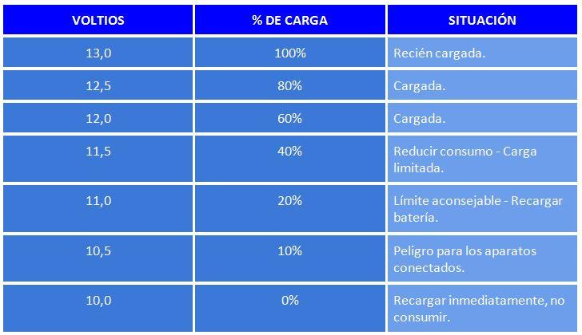
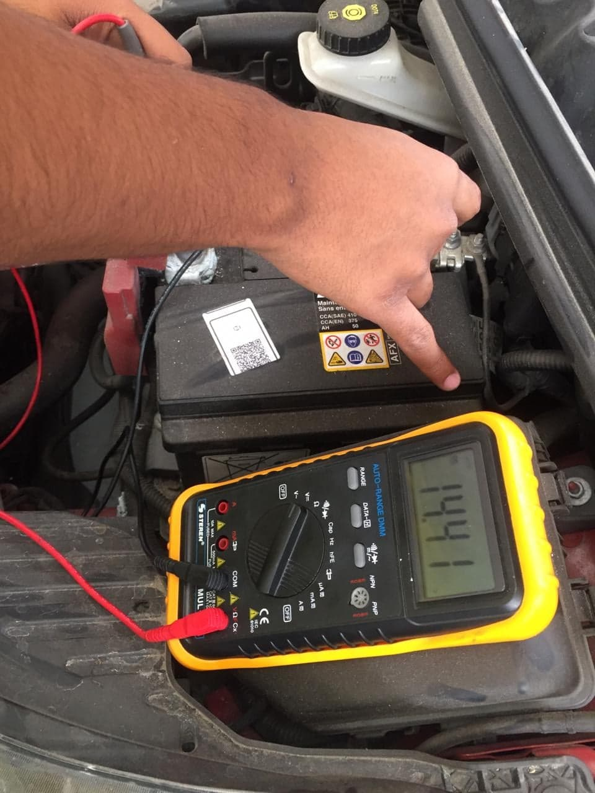
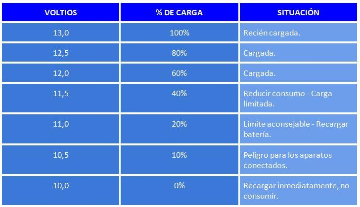
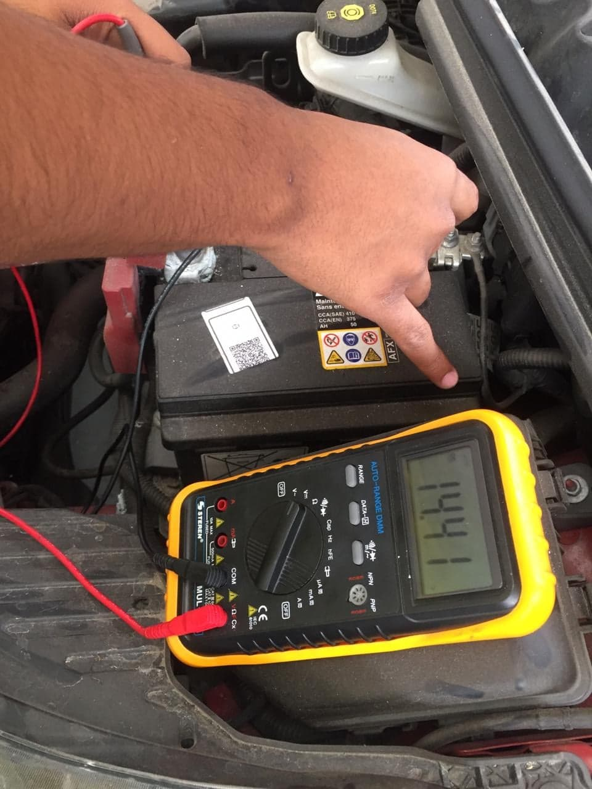

Prueba de Batería
La batería del automóvil es un componente fundamental pues este se encarga de alimentar el sistema de arranque por lo que es sumamente necesaria para encender el vehículo y alimentar todo el sistema eléctrico, la manera más sencilla de conocer si una batería se encuentra funcionando correctamente es hacer una prueba de voltaje la cual es la que realizaremos en esta ocasión.
Prueba en Batería
La totalidad de la prueba se divide en 2 partes una con el motor apagado y la otra con el motor encendido.
En este caso al abrir el cofre y la batería encontrarse del lado derecho nos dirigimos a ella con el multímetro encendido en Voltaje Directo es decir que se encuentre con un símbolo como este . Al estar cerca de la batería observamos que tiene dos polos uno positivo (rojo) y uno negativo (negro), para medir el voltaje que tiene es necesario utilizar el multímetro adecuadamente uniendo ambas puntas hacia la batería tal y como se muestra en la siguiente imagen.

Al terminar de realizar esta prueba y verificar cuanto voltaje es el que arroja debemos comparar con los datos de carga de batería. Los valores deberán variar según la carga de la batería por lo que a continuación hay una tabla que muestra los parámetros que existen


La segunda prueba se muestra en la prueba anterior, de nuevo con el multímetro en voltaje, deberemos encender el vehículo y con precaución de que ninguna de las puntas se puedan tocar entre si medir el voltaje de la batería mientras el auto enciende, el voltaje primero descenderá por la alimentación al sistema de arranque y posteriormente se elevara hasta llegar a un punto fijo con ese voltaje debemos asegurarnos que sea mayor o igual a 14.7 Volts de no ser así es importante llevarlo con un especialista debido a que la batería puede estar desgastado o un elemento esta consumiendo esta corriente.

Si no tienes un multímetro, puedes probar la salida de tu alternador arrancando el auto y encendiendo los faros. Si están bajos, esto indica que las luces están agotando la batería y el alternador está generando muy poca o ninguna potencia. Si las luces brillan más al acelerar el motor, esto significa que el alternador está produciendo algo de corriente, pero puede que la energía producida por el motor trabajando en vacío no sea suficiente para mantener la batería cargada correctamente. Si las luces tienen un brillo normal y no cambian de intensidad al acelerar el motor, entonces probablemente tu sistema de carga está funcionando normalmente.
Si está pasando esto, es importante determinar si la batería está conservando la carga, o si algún componente del vehículo la está descargando.
¿Qué se necesita para la prueba?
• 1 MultímetroPrueba en Batería
La totalidad de la prueba se divide en 2 partes una con el motor apagado y la otra con el motor encendido.
En este caso al abrir el cofre y la batería encontrarse del lado derecho nos dirigimos a ella con el multímetro encendido en Voltaje Directo es decir que se encuentre con un símbolo como este . Al estar cerca de la batería observamos que tiene dos polos uno positivo (rojo) y uno negativo (negro), para medir el voltaje que tiene es necesario utilizar el multímetro adecuadamente uniendo ambas puntas hacia la batería tal y como se muestra en la siguiente imagen.
Al terminar de realizar esta prueba y verificar cuanto voltaje es el que arroja debemos comparar con los datos de carga de batería. Los valores deberán variar según la carga de la batería por lo que a continuación hay una tabla que muestra los parámetros que existen

La segunda prueba se muestra en la prueba anterior, de nuevo con el multímetro en voltaje, deberemos encender el vehículo y con precaución de que ninguna de las puntas se puedan tocar entre si medir el voltaje de la batería mientras el auto enciende, el voltaje primero descenderá por la alimentación al sistema de arranque y posteriormente se elevara hasta llegar a un punto fijo con ese voltaje debemos asegurarnos que sea mayor o igual a 14.7 Volts de no ser así es importante llevarlo con un especialista debido a que la batería puede estar desgastado o un elemento esta consumiendo esta corriente.

Si no tienes un multímetro, puedes probar la salida de tu alternador arrancando el auto y encendiendo los faros. Si están bajos, esto indica que las luces están agotando la batería y el alternador está generando muy poca o ninguna potencia. Si las luces brillan más al acelerar el motor, esto significa que el alternador está produciendo algo de corriente, pero puede que la energía producida por el motor trabajando en vacío no sea suficiente para mantener la batería cargada correctamente. Si las luces tienen un brillo normal y no cambian de intensidad al acelerar el motor, entonces probablemente tu sistema de carga está funcionando normalmente.
Si está pasando esto, es importante determinar si la batería está conservando la carga, o si algún componente del vehículo la está descargando.